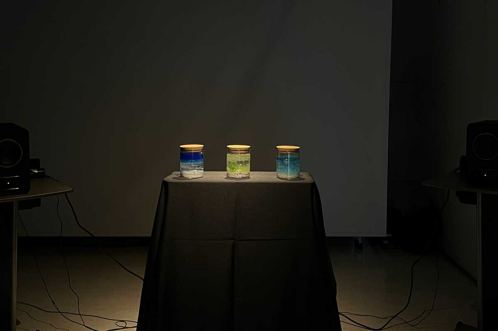

オープンキャンパス研究室紹介ブース展示用作品
「Sound Aquarium」
水は様々な音色を奏でる。
波のさざめき、泡の弾ける音、水面に雫落ちる音…。
これらの音を瓶に封じ込めた。
音の場にいなくとも実際にいるかのような、
音だけの世界へと連れて行く。
| ジャンル | インタラクティブアート |
|---|---|
| 制作期間 | 1ヶ月 |
| 制作人数 | ４人 |
| 担当 | 制作進行・エンジニア・空間設計 |
| 使用技術 | Processing・Arduino |

作品テーマは「水」。泡・波・雫の３つの瓶があり、手に取ることで閉じ込められていた音が響きます。
「音」に体験を絞ることで、映像を想像に任せることで、１人１人がオリジナルの場面体験を提供します。